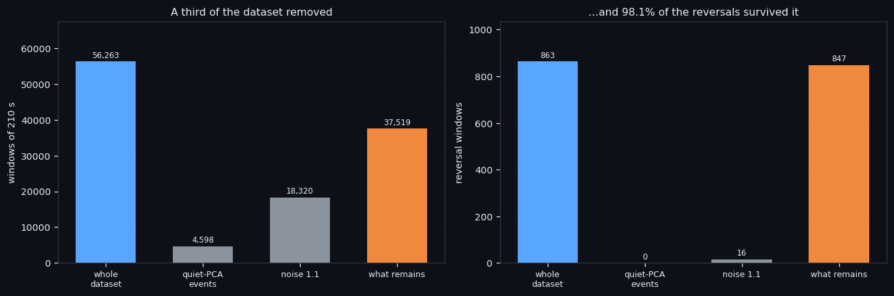
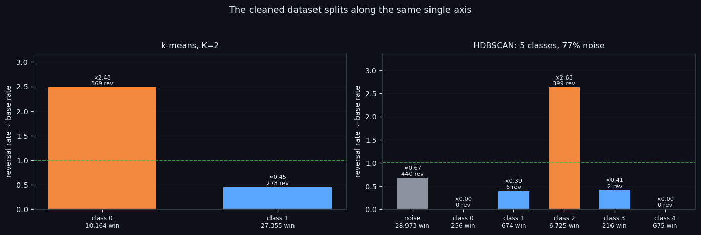
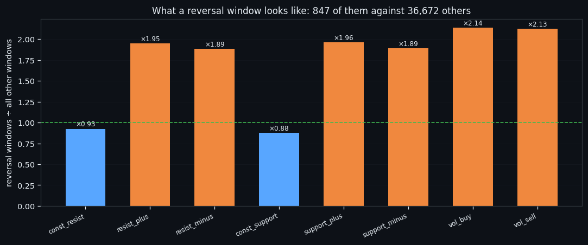
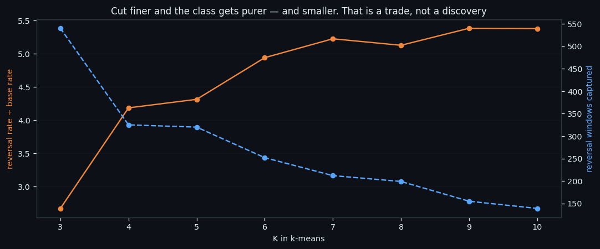

Throwing Away a Third of the Data and Keeping 98% of the Reversals
If a third of your data provably contains almost nothing you are looking for, it should not be in the training set. We removed 18,744 of 56,263 windows — everything two independent definitions of 'quiet' agree on — and kept 98.1% of all the reversal windows.
① What was removed, and what it cost
Two sets are subtracted, and they overlap, so what is removed is their union, not their sum:
| what we remove | windows | reversal windows in it | |---|---|---| | noise 1.1 — the quiet half of the quiet half of the noise | 18,320 | 16 | | every window where the quiet-PCA model fires, warm-up included | 4,598 | — | | what remains | 37,519 | 847 of 863 |
The second set is worth a note. The quiet-PCA label needs an external 28-day norm, so it does not exist for the first 28 days of the dataset — but the model does not need the norm, it only needs the window's own 1,680 numbers. So we ran it across the entire dataset, warm-up included: 235 firings there against 2.4% of windows, versus 9.4% on the labelled part. Honestly: on the warm-up there is nothing to check it against.
Everything in this series feeds one goal: an automated trading bot that reads the order book instead of the price. Training is the slow step of everything we do. A third fewer windows at 98% of the signal is a third more experiments per day.

② The cleaned set splits the same way
Cluster the cleaned set exactly as before, and nothing structural changes.
| split | classes | the reversal-rich one | reversals | versus base (2.26%) | |---|---|---|---|---| | k-means | K=2 | 10,164 windows | 569 | ×2.48 | | HDBSCAN | 5 + 77% noise | 6,725 windows | 399 | ×2.63 |
Two of the HDBSCAN classes contain exactly zero reversals, which is itself useful: those are shapes of the book that never sit on a turn.
That the same axis appears again after removing a third of the data is the check that the removal was legitimate. If the cleaning had cut into the signal, the classes would have moved.
Everything in this series feeds one goal: an automated trading bot that reads the order book instead of the price. Same structure, fewer windows, denser reversals — that is what "cleaned dataset" has to mean before anything is trained on it.

③ What a reversal window actually looks like
What does a reversal window actually look like? Averaged cell by cell over all 847 of them against the 36,672 others:
| feature | reversal windows | all others | ratio | |---|---|---|---| | const_resist | 2.29 | 2.47 | ×0.93 | | resist_plus | 7.37 | 3.78 | ×1.95 | | resist_minus | 2.79 | 1.48 | ×1.89 | | const_support | 2.12 | 2.42 | ×0.88 | | support_plus | 6.98 | 3.55 | ×1.96 | | support_minus | 2.72 | 1.44 | ×1.89 | | vol_buy | 0.28 | 0.13 | ×2.14 | | vol_sell | 0.28 | 0.13 | ×2.13 |
All six flow features roughly double. Both const walls go slightly down. Splitting the 210 seconds into three blocks changes nothing — the picture is identical at the start, the middle and the end of the window, so it is the level that carries the information, not the shape inside the window.
Split the reversals into tops and bottoms and the effects are much smaller but consistent: every flow feature is higher at a bottom, most strongly `vol_sell`, while the walls are identical. That matches the previous study — a bottom is a louder event than a top.
Everything in this series feeds one goal: an automated trading bot that reads the order book instead of the price. "Level, not shape" is a design decision for the bot: it means a handful of averages can stand in for a neural network, and averages are cheap to compute in real time.

④ Cutting finer: purity for coverage
Finally, cut the cleaned set finer with k-means and watch the trade-off.
| K | the best class | windows | reversals in it | versus base | |---|---|---|---|---| | 3 | class 2 | 8,954 | 540 | ×2.67 | | 5 | class 4 | 3,287 | 320 | ×4.31 | | 7 | class 5 | 1,798 | 212 | ×5.22 | | 10 | class 1 | 1,145 | 139 | ×5.38 |
Purity roughly doubles from K=3 to K=10 — and the number of reversals actually caught falls by three quarters. That is an exchange rate, not a discovery: no new class appears, the same "inflow" region is simply being sliced thinner. The data supports K=2; everything beyond it is description.
What is next. One more study closes this series: the full cleaning procedure written down as an executable recipe — every command, every trap, every control number with a tolerance — so it can be re-run on the other five coins and on future data without re-deriving it. Everything in this series feeds one goal: an automated trading bot that reads the order book instead of the price. That recipe is what turns a set of experiments into infrastructure a bot can be built on.

If this changed how you read the tape, the natural next step is A Recipe, Not a Result: How We Clean an Order-Book Dataset —
A Recipe, Not a Result: How We Clean an Order-Book Dataset
Volume Is the Fuel — Not the Steering Wheel
We recorded the Binance order book every second for six coins over five months and ran eighteen tests on what volume really does.
About Market Research Lab — What We Collect and Why
Most market commentary is storytelling.
From Calm to Calm: a Standard for What Counts as a Signal (BTC)
We stopped defining market signals with a stopwatch.
Comments
Discussion is powered by GitHub. Enable it by adding secrets/giscus.json (repo IDs from giscus.app).